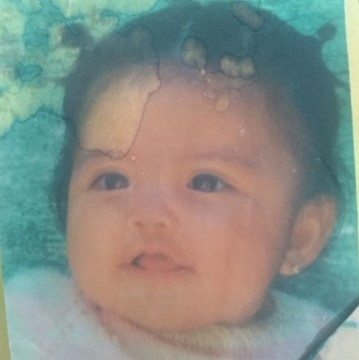
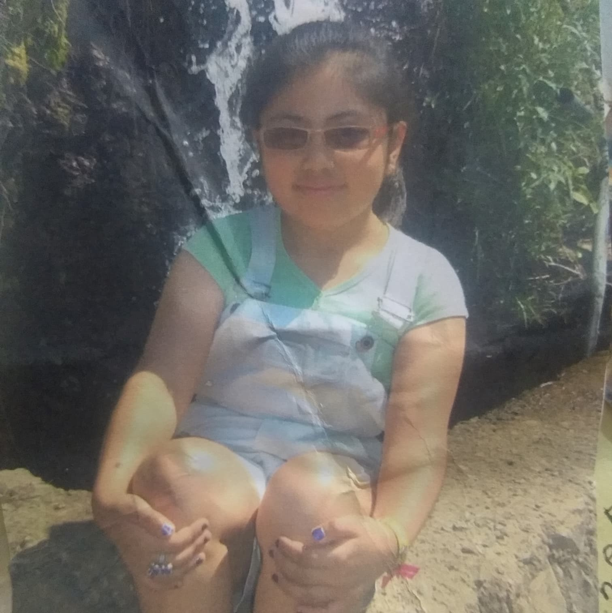
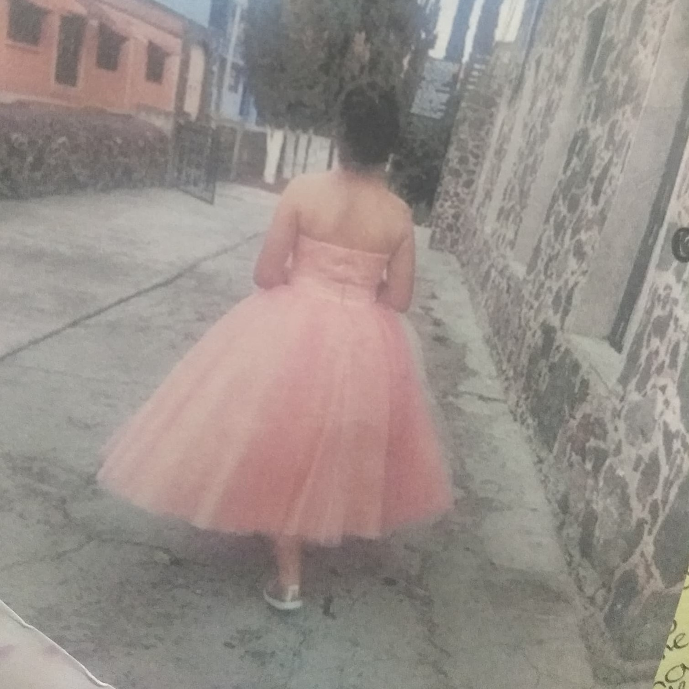
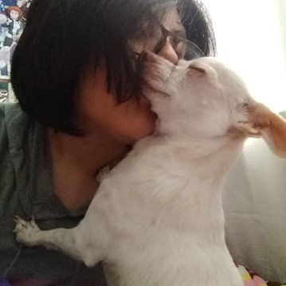

| Mi nombre es Julia Fernanda González Reséndiz.
Yo nací el día 7 de mayo del 2003. Mis papás son Noel González y Susana
Reséndiz. Igual tengo una hermana llamada Brenda Yadira, la cual es más grande que yo por
6 años y medio.
|
 |
| Aprendí a hablar y a caminar más o menos al
año de edad y a los 5 años aprendí a leer gracias a que entré al kinder. Yo fuí
a la misma escuela que mi hermana: Fray Juan de Zumarraga. Donde era una escuela con Kinder y primaria,
yo entré desde el kinder. Por lo tanto siemore tuve los mismos amigos todo el tiempo hasta ir
a secundaria.
|
 |
| Mientras cursaba la primaria, en tercer grado mi familia y
yo fuimos a Puerto Escondido de vacaciones por unos días, estuvimos parando en muchos lugares a
comer y en uno en especial paramos y comimos quesadillas muy ricas, tambien habín gallinas y me
daba miedo que fueran a picarme o algo parecido.
|
 |
Cuando entré a la secundaria mi padre tuvo un
accidente así que tuve que ir a una secundaria cerca de mi casa, pero cuando pasé
a segundo año cambié de casa y tuve que cambiar de escuela por la misma razón.
Pasé el resto de la secundaria en esa escuela y ahí tambien fuí parte de la
escolta. Incluso una vez fuimos a un concurso de escoltas y aunque no ganamos fue una buena experiencia.
Y cuando cumplí 15 años mis padres me hicieron una peque;a fiesta en la que fueron
personas conocidas y más que nada familiares.
|
 |
Cuando estaba por pasar a la secundaria tuve que hacer
mi examen de admision para la escuela, pero no junte los aciertos que debía así que
me tomé ese a;o para estudiar más y para prepararme.
Al año siguiente volví a hacer mi examen y quedé en mi primer opción,
la Voca 3.
|
|
| Actualmente tengo 17 años y estoy por pasar a tercer semestre
de preparatoria. Tengo una perrita llamada Luna, la cual va a cumplir 6 años el 11 de septiembre. Tengo
muchos amigos y la mayoría de ellos los hice en la Voca. Aún me faltan muchas cosas
por vivir y espero que sean cosas buenas.
|
 |